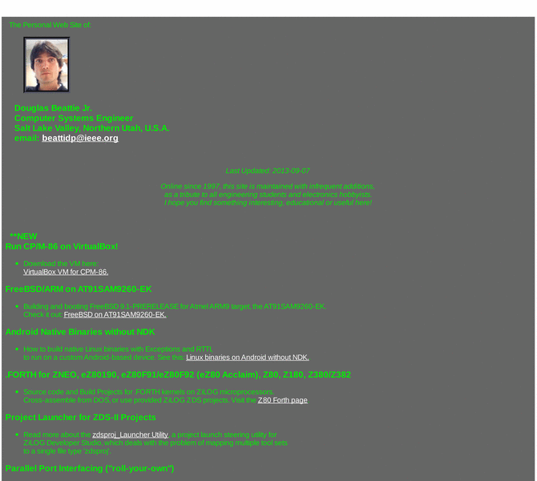

Previewing: Douglas Beattie Jr. -- Home Page Previewing: Douglas Beattie Jr. -- Home Page 
Use the left/right red arrow controls to navigate through this ring - Click the preview image to visit the member site.

Dedicated to 8-bit hobbyists and students of computer architecture and design.
Douglas Beattie Jr. -- Home Page owned by:
 beattidp beattidp
A member of 6502 Web Ring since 09/08/2000.
|
|